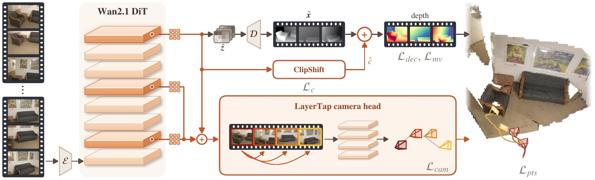
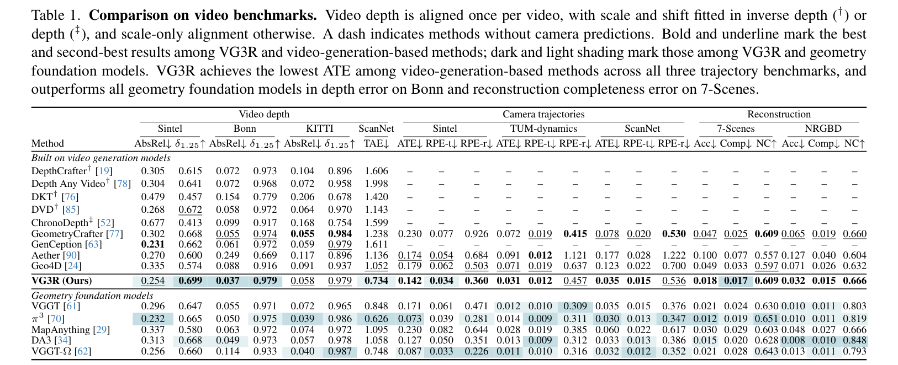

TL;DR VG3R turns a pretrained video generation model (Wan2.1) into a feed-forward 3D reconstruction model: from a video, it predicts the depth and the camera of every frame without iterative denoising.
Point clouds and cameras predicted by VG3R. Each scene is built frame by frame when it opens (press ▶ to replay); camera frustums are colored by time, from dark red (first frame) to yellow (last frame). Drag to orbit, right-drag or shift-drag to pan, scroll to zoom, double-click to reset the view. For the web, the point clouds are subsampled; on ScanNet, points at depth discontinuities are also removed.
Each method fuses the point maps of all frames with its own predicted cameras, without confidence filtering or other post-processing, and is aligned to the ground truth by one similarity transform, as in Fig. 4 of the paper. All panels share one camera: moving one moves all. The point clouds are subsampled for the web.
Inverse depth of the methods built on video generation models, after the alignment of Tab. 1 of the paper (one fit per video) and on one color range per video from the ground truth, as in Fig. 5. Played as videos, the panels also show how stable each prediction is over time.
Predicted camera trajectories over the ground-truth point cloud, with the ground-truth cameras in black, on sequences of Figs. 6 and 10 of the paper. Every trajectory is aligned to the ground truth by one similarity transform on the camera centers, and each button gives the ATE of its method. Choose a sequence and click a method to show or hide its trajectory; drag to orbit, right-drag or shift-drag to pan, scroll to zoom, double-click to reset the view.
Figs. 6 (top) and 10 of the paper. Left panel of each pair: GeometryCrafter, Aether and Geo4D; right panel: VG3R; the panels give the ATE in this order. Click a figure to enlarge it.

VG3R encodes the input video with the frozen VAE of Wan2.1 and processes its latents with the LoRA-adapted diffusion transformer at a fixed timestep, as a deterministic feed-forward regressor without iterative denoising.
The decoded inverse depth is normalized per clip and misses a shift that distorts the scene. The shift is invariant to scene scale and shared by all frames of the clip, so ClipShift predicts a single shift from the tokens of the last block and recovers the geometry up to scale.
Camera estimation benefits from features at multiple layers that capture camera motion. LayerTap combines the tokens of intermediate blocks 10 and 20 with those of the final block and predicts the camera of every frame relative to the first.
Table 1 of the paper: comparison on video benchmarks. More quantitative results are in the paper.

@article{chen2026vg3r,
title = {{VG3R}: Video Generation Model for Feed-Forward {3D} Reconstruction},
author = {Chen, Jingong and Zhang, Qingwen and Jiang, Linlian and
Zuo, Xinxin and Wang, Yang and Pack, Chulwoo and
Gao, Kyle and Jensfelt, Patric and Won, Kwanghee},
journal = {arXiv preprint arXiv:2611.28520},
year = {2026}
}